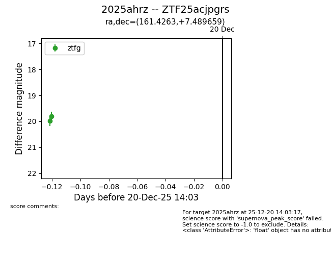
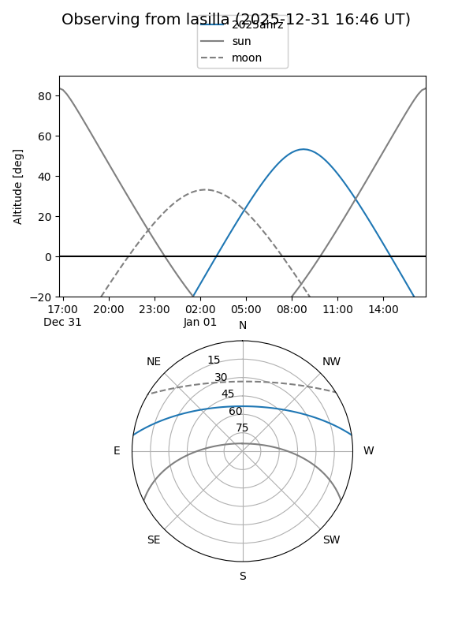
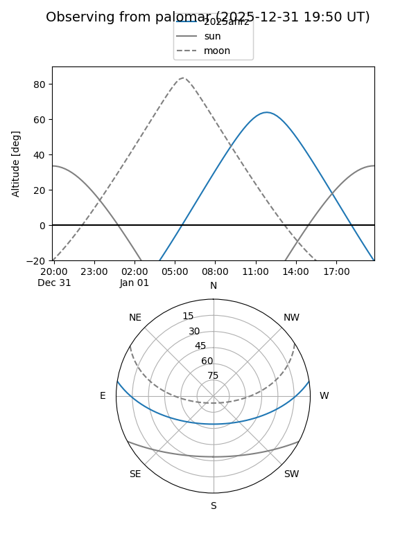
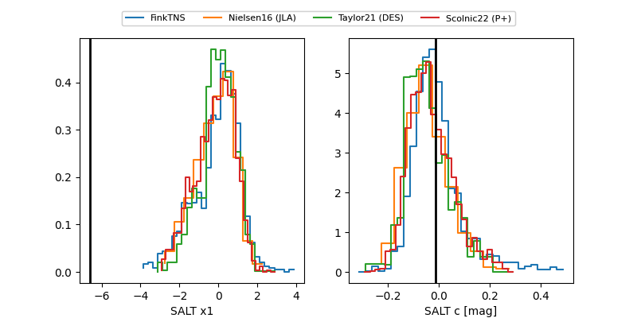

2025ahrz
Target 2025ahrz at 2025-12-22 20:06
Aliases and brokers:
FINK: fink-portal.org/ZTF25acjpgrs
Lasair: lasair-ztf.lsst.ac.uk/objects/ZTF25acjpgrs
ALeRCE: alerce.online/object/ZTF25acjpgrs
TNS: wis-tns.org/object/2025ahrz
YSE: ziggy.ucolick.org/yse/transient_detail/2025ahrz
alt names
ZTF25acjpgrs (ztf,fink_ztf)
2025ahrz (tns,yse)
Coordinates:
equatorial (ra, dec) = 161.4263,+7.48966
equatorial (HMS+DMS) = 10:45:42.31,+07:29:22.77
galactic (l, b) = (240.4824,+54.32507)
Flags:
Photometry:
last ztfg=19.92, ztfr=20.03
3 ztfg, 1 ztfr detections
Lightcurve

Visibility


Additional plots
